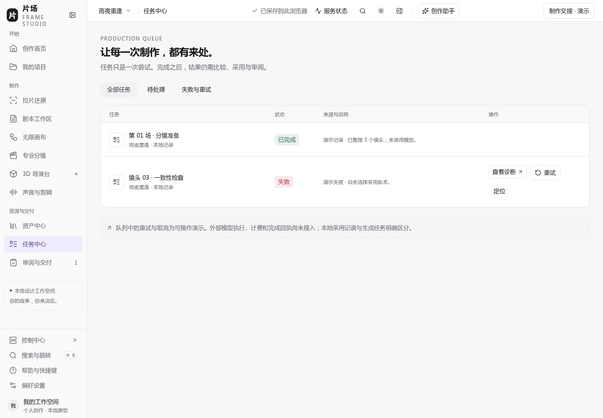

Yeisme 控制中心 · 集成审阅
打开控制中心 ↗
让服务管理回到创作现场
三个入口已经在片场副本中实现并通过浏览器验证。下方展示实际实现截图。
片场主原型存在另一项活动写入。本交付保留其远端入口；此处是已验证的集成审阅与源码补丁，不表示主原型已经更新。
导航与任务诊断
当前项目服务状态
保留原任务上下文

保持现有创作导航，仅增加管理入口。失败任务通过原项目、镜头与任务引用打开控制中心。
下载片场入口源码补丁
查看验证记录
查看接口交接